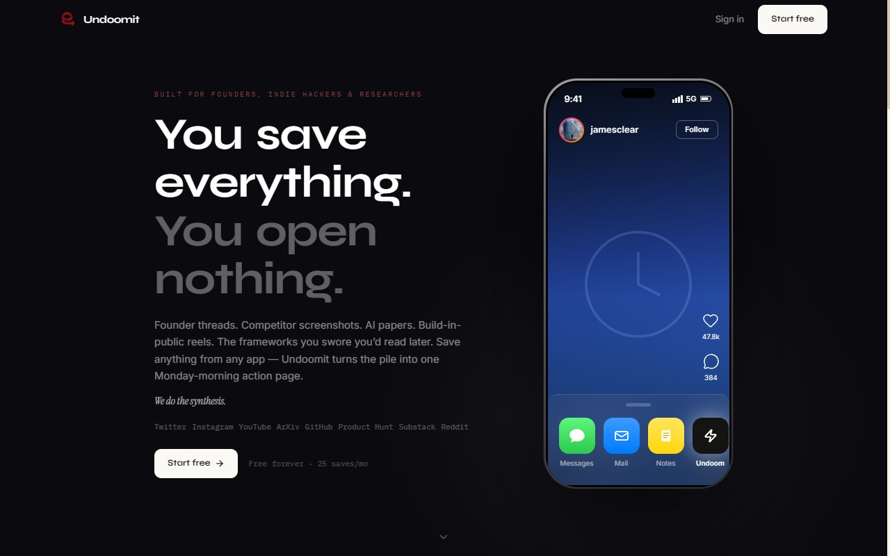
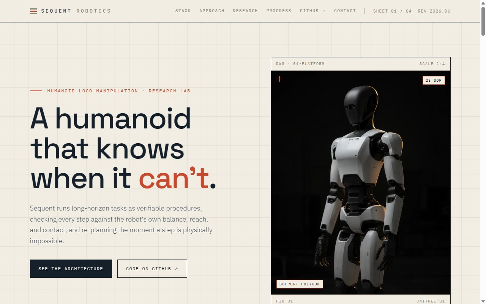
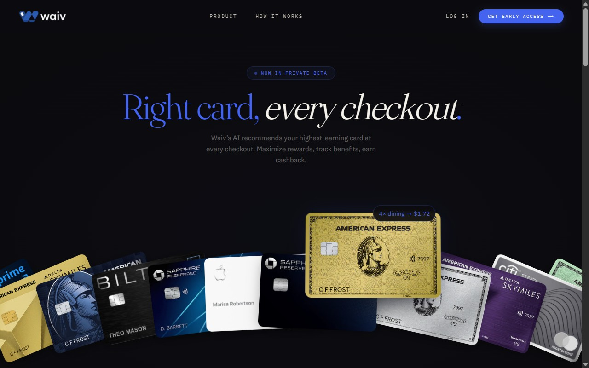
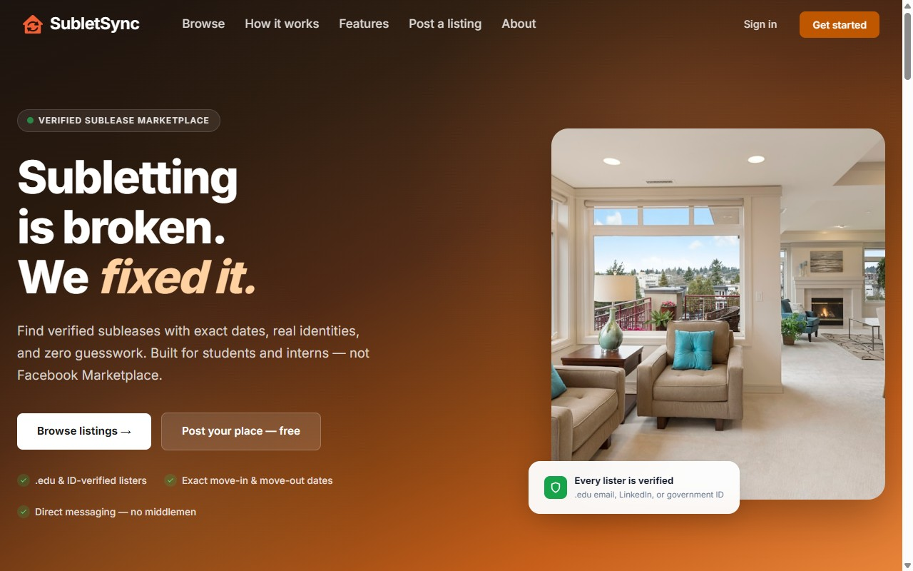
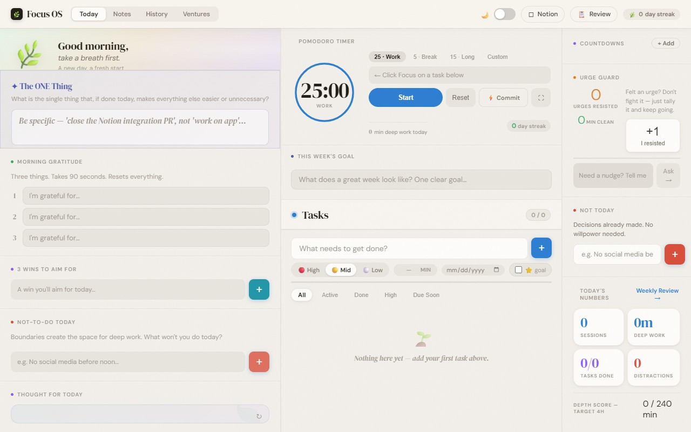

sector / ventures
Ventures
What I'm building right now: shipped products and research with a startup path.
sector / ventures
What I'm building right now: shipped products and research with a startup path.

You're going to scroll anyway. Make it count.
Save content from any app via the iOS Share Sheet. AI processes and categorises everything you capture, then delivers a daily digest email so you actually act on what you saved instead of hoarding it.
undoomit.com →
A humanoid that knows when it can't.
A humanoid system that verifies whether a planned action is physically feasible before executing it, and re-plans instantly when a step would fail. MuJoCo proof-of-concept today; research-to-product path via my PhD work at UT Austin.
View the demo →
Right card, every checkout.
Automatic credit-card routing that picks the optimal card for every purchase to maximize rewards. My sister's venture; I'm the technical co-builder behind the engineering.
waivme.com →Things I designed, shipped, and moved on from. Still real, still online; just not where my focus is anymore.

Subletting, fixed.
A verified sublease marketplace for students and interns in Austin. Real identities, exact move-in and move-out dates, direct messaging, and no Facebook Marketplace guesswork.
subletsync.com →
Your whole day, in one tab.
A full productivity OS in a single HTML file: pomodoro timer, task manager, goal tracking, mood check-ins, an urge guard, and an AI coach. Built around how focused people actually structure a day.
View on GitHub →Stay focused, together.
An accountability focus app for iOS. Block distracting sites at the network level with a content filter, then make a pact with a friend to stay on task, with an AI coach that tunes your next session.
View on GitHub →